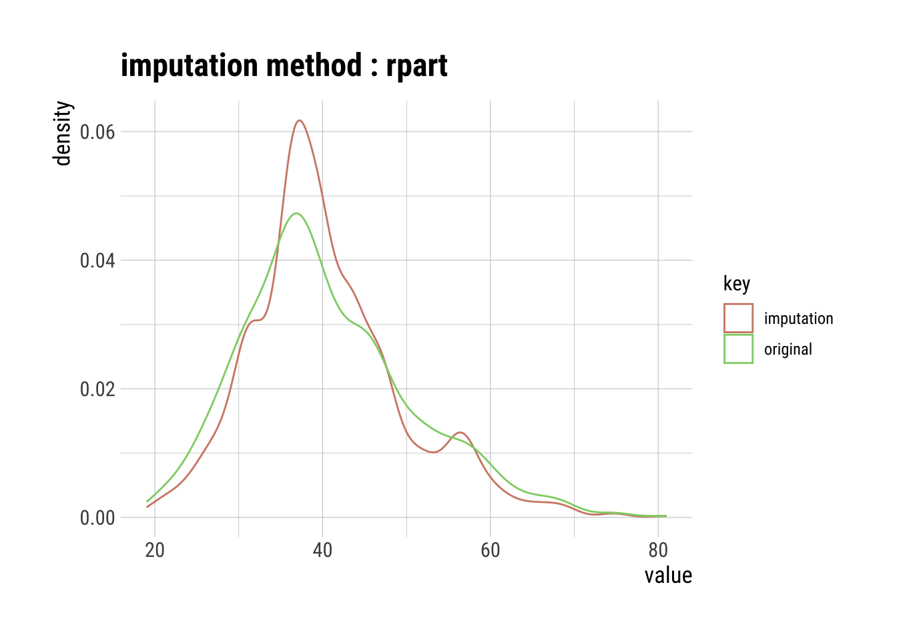

# Sets the number of significant figures to two - e.g., 0.01options(digits =2)# Required package for quick package downloading and loading if (!require(pacman))install.packages("pacman")
Loading required package: pacman
pacman::p_load(colorblindr, # Colorblind friendly pallettes cluster, # K cluster analyses dlookr, # Exploratory data analysis formattable, # HTML tables from R outputs ggfortify, # Plotting tools for stats ggpubr, # Publishable ggplots here, # Standardizes paths to data kableExtra, # Alternative to formattable knitr, # Needed to write HTML reports missRanger, # To generate NAs plotly, # Visualization package rattle, # Decision tree visualization rpart, # rpart algorithm tidyverse, # Powerful data wrangling package suite visdat, ggplot2 ) # Another EDA visualization package# Set global ggplot() theme# Theme pub_clean() from the ggpubr package with base text size = 16theme_set(theme_pubclean(base_size =16)) # All axes titles to their respective far right sidestheme_update(axis.title =element_text(hjust =1))# Remove axes tickstheme_update(axis.ticks =element_blank()) # Remove legend keytheme_update(legend.key =element_blank())
remotes::install_github("wilkelab/cowplot")
Skipping install of 'cowplot' from a github remote, the SHA1 (1f35f385) has not changed since last install.
Use `force = TRUE` to force installation
if (!require(colorspace)) install.packages("colorspace", repos ="http://R-Forge.R-project.org")remotes::install_github("clauswilke/colorblindr")
Skipping install of 'colorblindr' from a github remote, the SHA1 (90d64f8f) has not changed since last install.
Use `force = TRUE` to force installation
if (!require(ggplot2)) install.packages("ggplot2")#if (!require(virdis)) #install.packages("virdis")if (!require(dplyr)) install.packages("dplyr")#library(viridis)library(ggplot2)library(dplyr)
Rows: 1155 Columns: 13
── Column specification ────────────────────────────────────────────────────────
Delimiter: ","
chr (6): movie_name, director, actor_1_name, actor_2_name, character_1_gend...
dbl (5): release_year, age_difference, couple_number, actor_1_age, actor_2_age
date (2): actor_1_birthdate, actor_2_birthdate
ℹ Use `spec()` to retrieve the full column specification for this data.
ℹ Specify the column types or set `show_col_types = FALSE` to quiet this message.
dataset |>head() |>formattable()
movie_name
release_year
director
age_difference
couple_number
actor_1_name
actor_2_name
character_1_gender
character_2_gender
actor_1_birthdate
actor_2_birthdate
actor_1_age
actor_2_age
actor_age
Harold and Maude
1971
Hal Ashby
52
1
Ruth Gordon
Bud Cort
woman
man
1896-10-30
1948-03-29
75
23
Young
Venus
2006
Roger Michell
50
1
Peter O’Toole
Jodie Whittaker
man
woman
1932-08-02
1982-06-03
74
24
Young
The Quiet American
2002
Phillip Noyce
49
1
Michael Caine
Do Thi Hai Yen
man
woman
1933-03-14
1982-10-01
69
20
Young
The Big Lebowski
1998
Joel Coen
45
1
David Huddleston
Tara Reid
man
woman
1930-09-17
1975-11-08
68
23
Young
Beginners
2010
Mike Mills
43
1
Christopher Plummer
Goran Visnjic
man
man
1929-12-13
1972-09-09
81
38
Old
Poison Ivy
1992
Katt Shea
42
1
Tom Skerritt
Drew Barrymore
man
woman
1933-08-25
1975-02-22
59
17
Young
I have imported the data, made some sub groups depending on the actors age and visualized the first few rows of dataset.
Diagnose your Data
dataset |>diagnose() |>formattable()
variables
types
missing_count
missing_percent
unique_count
unique_rate
movie_name
character
0
0
830
0.7186
release_year
numeric
0
0
82
0.0710
director
character
0
0
510
0.4416
age_difference
numeric
0
0
46
0.0398
couple_number
numeric
0
0
7
0.0061
actor_1_name
character
0
0
567
0.4909
actor_2_name
character
0
0
647
0.5602
character_1_gender
character
0
0
2
0.0017
character_2_gender
character
0
0
2
0.0017
actor_1_birthdate
Date
0
0
562
0.4866
actor_2_birthdate
Date
0
0
640
0.5541
actor_1_age
numeric
0
0
59
0.0511
actor_2_age
numeric
0
0
45
0.0390
actor_age
factor
0
0
3
0.0026
Running diagnose() gives us the information of types, variables, missing count, unique count, unique rate of data, what percent of data is missing of the data set.]
The above is a formatted table showing information about outliers in the dataset, with rows sorted based on the calculated rate of outliers affecting the mean.
# Boxplots and histograms of data with and without outliersdataset |>select(find_outliers(dataset)) |>plot_outlier()
We can see from the above graphs that outliers affect the histograms shape by producing the high unusual peaks. We can see the histogram without outliers are more uniform and consistent. As for as for box plots, we can see that throughout the graphs, the common thing is that the asymmetry of the data. Also the outliers are on one side of the box plot which indicates skewness of data.
Basic Exploration of Missing Values (NAs)
# Randomly generate NAs for 30na.dataset <- dataset |>generateNA(p =0.3)# First six rowsna.dataset |>head() |>formattable()
movie_name
release_year
director
age_difference
couple_number
actor_1_name
actor_2_name
character_1_gender
character_2_gender
actor_1_birthdate
actor_2_birthdate
actor_1_age
actor_2_age
actor_age
Harold and Maude
1971
NA
NA
1
Ruth Gordon
NA
woman
man
1896-10-30
1948-03-29
75
NA
NA
Venus
2006
NA
NA
1
Peter O’Toole
Jodie Whittaker
NA
NA
NA
1982-06-03
74
24
Young
NA
NA
Phillip Noyce
49
1
Michael Caine
NA
man
NA
NA
1982-10-01
69
20
NA
NA
1998
Joel Coen
45
NA
David Huddleston
NA
NA
woman
1930-09-17
1975-11-08
68
23
Young
NA
2010
Mike Mills
43
NA
NA
Goran Visnjic
man
NA
1929-12-13
1972-09-09
81
38
Old
Poison Ivy
1992
Katt Shea
NA
NA
Tom Skerritt
NA
NA
woman
NA
1975-02-22
59
17
Young
In the above dataset we have inserted NA at random places and created a new dataser with missing values.
# Create the NA tablena.dataset |>plot_na_pareto(only_na =TRUE, plot =FALSE) |>formattable() # Publishable table
variable
frequencies
ratio
grade
cumulative
actor_1_age
346
0.3
Bad
7.1
actor_1_birthdate
346
0.3
Bad
14.3
actor_1_name
346
0.3
Bad
21.4
actor_2_age
346
0.3
Bad
28.6
actor_2_birthdate
346
0.3
Bad
35.7
actor_2_name
346
0.3
Bad
42.9
actor_age
346
0.3
Bad
50.0
age_difference
346
0.3
Bad
57.1
character_1_gender
346
0.3
Bad
64.3
character_2_gender
346
0.3
Bad
71.4
couple_number
346
0.3
Bad
78.6
director
346
0.3
Bad
85.7
movie_name
346
0.3
Bad
92.9
release_year
346
0.3
Bad
100.0
The table provides a summary of the categorical variables in your dataset, the occurences , its ratio relative to observed frequency and cumulative distribution of categories.
# Plot the insersect of the columns with missing values# This plot visualizes the table abovena.dataset |>plot_na_pareto(only_na =TRUE)
The above graph shows us that our data set is bad because it is filled with missing values. It also has plotted a line where it denotes the frequency of missing values along with its variable names.
Advanced Exploration of Missing Values (NAs)
# Plot the intersect of the 5 columns with the most missing values# This means that some combinations of columns have missing values in the same rowna.dataset |>select(age_difference, actor_1_age, actor_2_age) |>plot_na_intersect(only_na =TRUE)
The orange boxes represent the specific columns under consideration. On the top, the green bar plots along the x-axis depict the count of missing values in each of these columns. Simultaneously, the green bars on the right side, along the y-axis, illustrate the number of missing values collectively across the columns highlighted by the orange blocks.
Determining if NA Observations are the Same
# Interactive plotly() plot of all NA values to examine every rowna.dataset |>select(age_difference, actor_1_age, actor_2_age) |>vis_miss() |>ggplotly()
The above graph shows us the rows with missing values. We can hover over the graph and the information about the variable, if there is a missing value can be seen
Impute Outliers and NAs
Classifying Outliers
# Box plotdataset |># Set the simulated normal data as a data frameggplot(aes(x = actor_1_age, y = actor_age, fill = actor_age)) +# Create a ggplotgeom_boxplot(width =0.5, outlier.size =2, outlier.alpha =0.5) +xlab("actor_1_age") +# Relabel the x axis labelylab("Actor age classification") +# Remove the y axis labelscale_fill_OkabeIto() +# Change the color scheme for the fill criteriatheme(legend.position ="none") # Remove the legend
The above box plot shows the classification of actors depending on the age. We can see that the box plots are asymmetrical and outliers lie on the right which denotes the data is positively skewed. The old category subgroup has a very well normalised data compared to the rest subgroups.
Mean Imputation
# Raw summary, output suppressedmean_out_imp_actor_1_age <- dataset |>select(actor_1_age) |>filter(actor_1_age <100) |>imputate_outlier(actor_1_age, method ="mean")# Output showing the summary statistics of our imputationmean_out_imp_actor_1_age |>summary()
The mean of the observed values for each variable is computed and the outliers for that variable are imputed by this mean.
# Visualization of the mean imputationmean_out_imp_actor_1_age |>plot()
The original data and imputed data is plotted here. So overall, it is observed that the imputation with mean values tends to center the distribution, reduce variability, and lessen the rightward skewness observed in the original dataset.
Median Imputation
# Raw summary, output suppressedmed_out_imp_actor_1_age <- dataset |>select(actor_1_age) |>filter(actor_1_age <100) |>imputate_outlier(actor_1_age, method ="median")# Output showing the summary statistics of our imputationmed_out_imp_actor_1_age |>summary()
The mode of the observed values for each variable is computed and the outliers for that variable are imputed by this mode
mode_out_imp_actor_1_age |>plot()
The percentiles (p00 to p100) remain relatively stable, denoting that imputing outliers with the mode maintains the overall distribution shape, which can be observed from the plot.
Capping Imputation (aka Winsorizing)
# Raw summary, output suppressedcap_out_imp_actor_1_age <- dataset |>select(actor_1_age) |>filter(actor_1_age <100) |>imputate_outlier(actor_1_age, method ="capping")# Output showing the summary statistics of our imputationcap_out_imp_actor_1_age |>summary()
The Percentile Capping is a method of Imputing the outlier values by replacing those observations outside the lower limit with the value of 5th percentile and those that lie above the upper limit, with the value of 95th percentile of the same dataset.
# Visualization of the capping imputationcap_out_imp_actor_1_age |>plot()
The imputation process did not drastically alter the mean, but it effectively reduced the skewness and kurtosis, indicating a more symmetrical plot.
Imputing NAs
K-Nearest Neighbor (KNN) Imputation
# KNN plot of our dataset without categoriesautoplot(clara(dataset[-5], 3)) +scale_color_OkabeIto()
This is the KNN plot of our original data. KNN, a machine learning algorithm, categorizes data by measuring similarity, effectively grouping it into clusters. The algorithm predicts values for new data points by assessing their resemblance to training data.
actor_age actor_2_age actor_1_age
1 Young 23 75
2 Young 24 74
3 Young 20 69
4 Young 23 68
5 Old 38 81
6 Young 17 59
7 Young 22 62
8 Young 30 69
9 Young 19 57
10 Old 39 NA
11 Young 23 59
12 Young 20 56
13 Young 30 NA
14 Old 31 NA
15 Young 22 56
16 Young 19 53
17 Young 26 NA
18 Young 27 NA
19 Young 23 56
20 Old 34 67
21 Old 35 68
22 Young 24 56
23 Young 17 NA
24 Young 28 60
25 Old 35 67
26 Old 43 75
27 Young 29 61
28 Old 34 65
29 Young 29 60
30 Young 28 58
31 Young 30 60
32 Young 24 NA
33 Young 28 58
34 Young 24 NA
35 Young 29 NA
36 Young 25 55
37 Young 20 NA
38 Young 20 49
39 Young 29 NA
40 Old 34 63
41 Old 32 61
42 Old 33 62
43 Young 20 NA
44 Old 40 69
45 Young 17 46
46 Young 26 NA
47 Young 30 NA
48 Young 26 54
49 Young 26 54
50 Old 32 60
51 Young 25 53
52 Young 23 NA
53 Young 20 NA
54 Young 28 NA
55 Young 26 NA
56 Young 28 55
57 Young 29 56
58 Young 26 NA
59 Young 26 53
60 Young 23 50
61 Old 35 62
62 Old 34 NA
63 Old 43 69
64 Young 26 52
65 Young 23 49
66 Young 27 NA
67 Young 27 NA
68 Old 31 57
69 Young 18 44
70 Old 34 NA
71 Old 35 NA
72 Old 35 NA
73 Old 34 59
74 Young 24 49
75 Young 23 NA
76 Young 20 45
77 Young 24 NA
78 Young 26 NA
79 Old 32 57
80 Old 33 NA
81 Young 29 54
82 Young 25 50
83 Young 23 48
84 Young 22 NA
85 Old 35 60
86 Young 26 51
87 Young 20 45
88 Young 25 NA
89 Old 33 58
90 Old 34 58
91 Young 29 53
92 Young 21 NA
93 Old 33 NA
94 Young 25 NA
95 Young 23 47
96 Young 27 NA
97 Young 23 47
98 Young 27 51
99 Young 22 NA
100 Young 28 NA
101 Young 28 NA
102 Young 30 NA
103 Old 38 NA
104 Young 27 51
105 Very old 56 NA
106 Young 24 47
107 Old 35 NA
108 Young 29 NA
109 Young 29 52
110 Old 33 56
111 Young 30 53
112 Young 27 NA
113 Old 34 57
114 Young 23 46
115 Young 24 47
116 Young 29 NA
117 Young 25 48
118 Young 29 51
119 Young 25 47
120 Young 25 NA
121 Young 24 46
122 Young 24 46
123 Young 26 48
124 Old 33 55
125 Young 22 44
126 Old 49 NA
127 Young 29 51
128 Old 38 NA
129 Old 37 58
130 Young 22 43
131 Old 33 NA
132 Old 31 52
133 Old 32 NA
134 Old 31 52
135 Old 33 54
136 Old 31 52
137 Old 37 58
138 Young 30 51
139 Young 24 45
140 Young 19 NA
141 Young 22 NA
142 Young 26 NA
143 Young 28 49
144 Old 35 56
145 Young 25 46
146 Old 35 NA
147 Old 36 NA
148 Young 26 47
149 Young 30 NA
150 Old 50 NA
151 Old 36 NA
152 Young 23 44
153 Young 24 45
154 Young 20 40
155 Young 26 46
156 Young 26 NA
157 Young 22 42
158 Young 26 46
159 Old 32 52
160 Old 35 NA
161 Young 17 37
162 Young 27 NA
163 Young 24 44
164 Young 29 NA
165 Young 20 40
166 Young 26 NA
167 Young 22 NA
168 Young 26 46
169 Old 44 64
170 Young 30 50
171 Young 27 47
172 Old 40 NA
173 Old 35 55
174 Young 19 NA
175 Young 20 NA
176 Young 27 46
177 Young 26 45
178 Young 18 37
179 Old 45 64
180 Young 23 42
181 Young 29 48
182 Young 29 NA
183 Young 30 49
184 Young 25 44
185 Young 24 43
186 Young 25 44
187 Young 30 NA
188 Young 26 NA
189 Old 46 65
190 Young 24 43
191 Old 34 53
192 Old 43 62
193 Young 24 NA
194 Old 32 51
195 Old 31 49
196 Young 30 48
197 Old 37 NA
198 Young 21 39
199 Young 29 NA
200 Old 40 58
201 Young 21 39
202 Young 22 40
203 Young 30 48
204 Old 38 NA
205 Young 19 NA
206 Young 23 41
207 Young 22 40
208 Young 25 NA
209 Old 39 57
210 Old 36 54
211 Old 32 50
212 Young 30 48
213 Young 25 NA
214 Old 39 NA
215 Old 46 64
216 Young 26 44
217 Young 28 46
218 Young 29 47
219 Young 25 43
220 Young 28 NA
221 Old 39 NA
222 Old 44 62
223 Young 28 NA
224 Old 40 NA
225 Old 32 NA
226 Old 36 53
227 Old 31 48
228 Young 23 40
229 Young 23 NA
230 Old 42 59
231 Young 28 45
232 Young 25 NA
233 Old 43 NA
234 Young 24 NA
235 Young 28 45
236 Young 26 43
237 Old 34 51
238 Young 29 NA
239 Young 30 NA
240 Old 34 NA
241 Young 20 37
242 Old 37 NA
243 Young 25 42
244 Young 19 36
245 Young 30 47
246 Old 31 48
247 Old 36 53
248 Young 28 45
249 Young 26 NA
250 Young 27 44
251 Young 28 45
252 Young 28 45
253 Old 33 50
254 Young 22 39
255 Old 35 51
256 Young 23 39
257 Young 30 NA
258 Young 27 43
259 Young 28 44
260 Old 49 NA
261 Young 30 46
262 Old 31 47
263 Young 25 NA
264 Young 27 43
265 Young 27 NA
266 Young 26 42
267 Old 43 59
268 Young 30 NA
269 Old 33 NA
270 Young 30 46
271 Old 34 NA
272 Young 25 NA
273 Young 22 NA
274 Old 37 53
275 Young 23 39
276 Young 28 44
277 Young 27 43
278 Old 42 58
279 Young 24 40
280 Young 22 38
281 Young 30 46
282 Young 20 36
283 Young 23 39
284 Young 25 41
285 Old 37 53
286 Old 42 58
287 Young 22 NA
288 Old 36 51
289 Young 20 NA
290 Old 37 52
291 Old 32 NA
292 Young 22 NA
293 Old 36 51
294 Young 26 41
295 Young 23 38
296 Young 28 NA
297 Old 32 47
298 Young 30 45
299 Young 28 43
300 Young 24 NA
301 Old 37 52
302 Young 22 37
303 Old 34 49
304 Young 22 NA
305 Young 19 34
306 Old 32 NA
307 Young 18 33
308 Old 47 62
309 Old 31 46
310 Young 25 39
311 Young 26 40
312 Old 42 56
313 Old 37 51
314 Young 24 38
315 Old 34 NA
316 Young 23 37
317 Young 25 39
318 Young 25 39
319 Young 30 44
320 Old 34 48
321 Young 19 33
322 Young 27 NA
323 Young 27 41
324 Old 31 NA
325 Young 22 36
326 Young 30 NA
327 Young 30 44
328 Old 36 50
329 Young 21 35
330 Young 30 44
331 Old 37 51
332 Young 26 NA
333 Young 17 31
334 Young 30 44
335 Young 22 36
336 Young 26 NA
337 Young 27 41
338 Young 20 34
339 Young 27 41
340 Young 28 42
341 Old 37 50
342 Old 32 45
343 Young 27 NA
344 Young 27 40
345 Young 24 37
346 Old 46 NA
347 Old 36 NA
348 Young 23 36
349 Young 24 NA
350 Young 29 42
351 Young 24 37
352 Old 33 46
353 Young 27 40
354 Old 35 NA
355 Young 25 38
356 Young 23 36
357 Old 44 57
358 Old 44 57
359 Young 22 35
360 Old 36 49
361 Young 24 37
362 Young 28 41
363 Young 24 37
364 Young 28 41
365 Young 24 37
366 Young 29 42
367 Young 24 37
368 Young 27 40
369 Old 36 NA
370 Old 31 NA
371 Old 33 46
372 Young 28 NA
373 Very old 53 66
374 Old 43 56
375 Young 25 38
376 Old 34 NA
377 Young 24 37
378 Young 25 37
379 Old 41 NA
380 Old 36 48
381 Young 23 35
382 Young 27 39
383 Young 26 38
384 Old 31 43
385 Young 27 39
386 Young 21 NA
387 Young 26 38
388 Old 43 55
389 Young 30 42
390 Old 40 NA
391 Old 48 60
392 Old 33 NA
393 Young 22 34
394 Young 29 41
395 Young 25 37
396 Young 20 NA
397 Young 25 37
398 Young 30 42
399 Young 28 40
400 Young 21 33
401 Young 30 42
402 Old 44 56
403 Young 29 41
404 Young 24 NA
405 Old 33 45
406 Old 33 45
407 Old 37 49
408 Old 33 45
409 Old 35 NA
410 Old 44 56
411 Old 33 45
412 Old 36 48
413 Old 38 50
414 Old 31 42
415 Old 32 43
416 Old 31 42
417 Old 35 NA
418 Young 29 40
419 Young 27 38
420 Young 26 37
421 Old 34 45
422 Young 24 35
423 Young 22 NA
424 Old 35 46
425 Old 38 49
426 Old 31 42
427 Old 44 NA
428 Young 28 39
429 Old 33 44
430 Old 35 NA
431 Young 21 32
432 Young 26 37
433 Young 20 31
434 Young 25 36
435 Young 20 31
436 Young 29 NA
437 Old 43 54
438 Young 29 40
439 Old 33 44
440 Old 43 54
441 Old 46 57
442 Young 24 NA
443 Young 26 37
444 Old 38 NA
445 Young 29 40
446 Young 22 33
447 Old 32 NA
448 Young 23 34
449 Young 22 33
450 Young 28 39
451 Old 31 42
452 Old 37 48
453 Young 28 39
454 Young 27 NA
455 Young 28 NA
456 Young 24 35
457 Old 33 NA
458 Young 26 37
459 Old 31 NA
460 Young 22 33
461 Young 21 32
462 Young 29 40
463 Young 26 NA
464 Young 25 NA
465 Young 30 40
466 Old 36 NA
467 Old 32 NA
468 Young 27 37
469 Young 29 39
470 Old 34 NA
471 Old 33 43
472 Old 31 NA
473 Old 35 NA
474 Young 28 38
475 Young 23 NA
476 Young 28 38
477 Young 28 NA
478 Old 33 43
479 Old 33 43
480 Young 29 39
481 Young 24 34
482 Old 47 57
483 Young 27 37
484 Old 32 NA
485 Old 48 58
486 Old 36 46
487 Young 21 31
488 Young 29 39
489 Young 23 33
490 Young 30 40
491 Old 31 NA
492 Young 25 35
493 Young 28 38
494 Young 29 39
495 Young 26 36
496 Young 28 NA
497 Young 20 30
498 Old 36 46
499 Young 24 34
500 Young 26 NA
501 Young 22 NA
502 Old 36 46
503 Old 37 NA
504 Young 25 35
505 Young 22 32
506 Old 31 41
507 Young 25 NA
508 Young 27 37
509 Young 20 NA
510 Young 28 37
511 Young 29 NA
512 Old 38 47
513 Old 31 40
514 Young 19 28
515 Young 25 NA
516 Young 25 NA
517 Old 38 47
518 Old 47 56
519 Old 32 41
520 Old 32 41
521 Old 33 42
522 Young 22 31
523 Young 23 NA
524 Young 30 39
525 Old 36 45
526 Old 33 42
527 Very old 51 60
528 Young 25 34
529 Young 22 31
530 Young 27 36
531 Old 38 47
532 Very old 51 60
533 Young 29 38
534 Young 25 NA
535 Young 26 35
536 Young 30 39
537 Young 21 30
538 Young 25 NA
539 Young 22 31
540 Young 24 NA
541 Old 46 55
542 Young 30 39
543 Young 23 NA
544 Very old 57 66
545 Old 32 NA
546 Young 26 35
547 Old 31 NA
548 Young 28 37
549 Old 36 45
550 Young 29 38
551 Young 21 30
552 Young 28 37
553 Young 29 38
554 Old 33 NA
555 Young 23 32
556 Old 35 44
557 Old 33 42
558 Young 25 34
559 Young 27 36
560 Old 32 41
561 Young 22 31
562 Old 45 53
563 Young 20 NA
564 Young 24 32
565 Old 37 45
566 Young 23 31
567 Young 28 NA
568 Young 20 NA
569 Old 49 57
570 Young 23 31
571 Young 26 34
572 Old 40 48
573 Old 35 NA
574 Old 37 45
575 Young 27 35
576 Young 19 NA
577 Old 33 NA
578 Old 32 40
579 Young 24 32
580 Old 32 NA
581 Young 19 27
582 Old 35 43
583 Young 27 35
584 Young 25 NA
585 Old 39 NA
586 Young 18 26
587 Young 26 34
588 Young 24 NA
589 Old 33 NA
590 Young 27 35
591 Young 28 NA
592 Old 32 NA
593 Young 29 37
594 Old 33 41
595 Young 18 26
596 Young 27 35
597 Young 30 38
598 Old 39 NA
599 Old 33 NA
600 Young 26 34
601 Old 33 41
602 Young 27 35
603 Young 19 27
604 Old 44 52
605 Young 29 37
606 Old 35 43
607 Young 26 NA
608 Young 30 38
609 Old 31 39
610 Old 37 45
611 Old 41 49
612 Young 24 32
613 Old 40 NA
614 Young 24 32
615 Old 38 46
616 Old 32 NA
617 Old 31 39
618 Very old 52 NA
619 Young 23 31
620 Young 29 37
621 Old 34 41
622 Very old 51 58
623 Old 32 NA
624 Young 29 36
625 Young 30 37
626 Young 26 33
627 Young 22 29
628 Old 35 42
629 Old 34 41
630 Young 26 33
631 Young 19 NA
632 Old 37 44
633 Young 26 33
634 Old 33 40
635 Young 21 28
636 Young 19 26
637 Young 26 33
638 Young 28 35
639 Old 38 45
640 Young 29 36
641 Old 47 NA
642 Old 33 40
643 Young 23 30
644 Young 28 35
645 Young 28 35
646 Young 26 33
647 Old 37 NA
648 Old 40 47
649 Young 27 34
650 Old 35 42
651 Very old 60 67
652 Old 41 48
653 Young 22 29
654 Old 33 NA
655 Old 33 NA
656 Young 26 33
657 Old 36 43
658 Old 37 44
659 Old 43 50
660 Old 33 40
661 Old 40 47
662 Old 44 NA
663 Old 37 44
664 Old 34 41
665 Young 25 32
666 Old 32 39
667 Old 33 NA
668 Young 23 NA
669 Old 31 38
670 Old 40 47
671 Young 24 31
672 Old 32 39
673 Old 34 NA
674 Young 17 NA
675 Young 30 37
676 Young 28 35
677 Young 20 27
678 Old 41 NA
679 Old 32 NA
680 Young 19 26
681 Old 35 NA
682 Young 23 NA
683 Young 21 28
684 Young 29 NA
685 Old 43 50
686 Young 30 NA
687 Old 41 48
688 Young 26 33
689 Young 28 NA
690 Old 37 44
691 Young 27 NA
692 Old 31 37
693 Old 33 NA
694 Young 18 24
695 Old 33 NA
696 Young 27 33
697 Young 22 28
698 Old 32 38
699 Young 20 26
700 Old 42 NA
701 Young 29 35
702 Young 30 36
703 Young 26 32
704 Old 32 38
705 Old 32 NA
706 Old 37 43
707 Young 23 NA
708 Old 31 37
709 Young 20 NA
710 Young 29 35
711 Old 33 39
712 Young 23 29
713 Old 33 39
714 Old 33 NA
715 Old 46 52
716 Young 24 30
717 Young 24 30
718 Young 23 NA
719 Young 20 NA
720 Young 25 NA
721 Young 30 36
722 Young 18 NA
723 Young 30 36
724 Young 21 NA
725 Old 35 41
726 Young 19 25
727 Young 28 34
728 Old 39 NA
729 Young 24 30
730 Old 36 42
731 Old 42 48
732 Young 26 32
733 Young 30 36
734 Old 31 37
735 Old 31 37
736 Old 44 50
737 Young 30 36
738 Old 31 37
739 Old 34 40
740 Young 29 35
741 Young 30 NA
742 Old 32 37
743 Young 30 35
744 Old 37 NA
745 Young 30 35
746 Young 27 32
747 Young 28 NA
748 Young 21 26
749 Young 19 NA
750 Young 22 27
751 Young 21 26
752 Young 23 NA
753 Young 19 24
754 Young 30 35
755 Old 37 42
756 Old 36 NA
757 Old 32 37
758 Old 31 NA
759 Old 31 NA
760 Young 23 28
761 Young 25 30
762 Young 26 31
763 Young 23 28
764 Old 40 45
765 Young 26 NA
766 Young 28 33
767 Old 34 39
768 Old 34 39
769 Young 25 NA
770 Old 47 52
771 Young 17 22
772 Young 27 32
773 Old 32 37
774 Old 41 46
775 Young 29 34
776 Old 36 41
777 Young 25 30
778 Old 41 46
779 Old 34 39
780 Old 36 41
781 Young 23 28
782 Old 31 NA
783 Old 42 47
784 Young 25 30
785 Old 33 38
786 Young 23 NA
787 Young 30 35
788 Young 23 28
789 Young 25 NA
790 Young 17 22
791 Old 32 37
792 Young 26 31
793 Old 42 NA
794 Young 24 29
795 Young 30 35
796 Old 34 NA
797 Old 35 40
798 Old 36 41
799 Old 31 36
800 Young 26 31
801 Old 50 55
802 Young 26 31
803 Old 47 52
804 Young 28 33
805 Young 30 35
806 Young 24 NA
807 Young 30 35
808 Old 33 38
809 Young 21 NA
810 Old 32 37
811 Young 21 NA
812 Old 31 36
813 Old 34 NA
814 Young 26 30
815 Young 27 31
816 Young 27 31
817 Young 28 NA
818 Young 26 NA
819 Old 35 39
820 Young 17 21
821 Old 33 37
822 Old 40 44
823 Young 27 NA
824 Old 33 NA
825 Young 26 30
826 Young 21 25
827 Young 21 NA
828 Young 29 NA
829 Young 25 29
830 Old 33 37
831 Old 33 NA
832 Old 34 38
833 Old 32 36
834 Old 34 38
835 Old 37 41
836 Young 27 31
837 Young 26 30
838 Young 17 21
839 Old 42 46
840 Old 38 NA
841 Young 26 NA
842 Very old 60 64
843 Old 48 NA
844 Young 25 NA
845 Old 32 36
846 Old 32 36
847 Very old 55 59
848 Old 31 35
849 Young 23 27
850 Young 30 34
851 Young 30 NA
852 Old 35 39
853 Old 33 37
854 Old 43 NA
855 Old 50 54
856 Young 29 33
857 Young 23 27
858 Old 31 35
859 Old 47 51
860 Old 35 NA
861 Young 28 NA
862 Old 48 52
863 Old 44 NA
864 Old 33 37
865 Old 32 36
866 Young 28 32
867 Young 21 25
868 Young 28 32
869 Old 33 NA
870 Old 32 NA
871 Old 32 36
872 Young 18 NA
873 Old 38 42
874 Young 27 31
875 Young 26 NA
876 Young 24 NA
877 Young 22 26
878 Old 32 NA
879 Old 44 47
880 Old 35 38
881 Old 41 44
882 Very old 63 66
883 Young 25 NA
884 Young 25 28
885 Old 47 NA
886 Young 26 29
887 Old 34 37
888 Old 37 40
889 Young 24 27
890 Young 21 NA
891 Old 37 40
892 Young 29 32
893 Young 27 30
894 Old 33 36
895 Young 30 NA
896 Young 28 31
897 Young 25 28
898 Old 31 34
899 Young 30 NA
900 Old 37 40
901 Old 33 36
902 Young 20 NA
903 Young 18 21
904 Young 18 21
905 Young 29 32
906 Young 23 26
907 Old 33 36
908 Young 20 23
909 Old 32 35
910 Old 35 38
911 Old 42 45
912 Old 35 38
913 Young 20 23
914 Young 27 30
915 Old 32 35
916 Old 35 38
917 Old 32 35
918 Young 27 30
919 Old 36 39
920 Young 23 NA
921 Young 22 25
922 Old 32 35
923 Old 32 NA
924 Old 35 38
925 Young 19 NA
926 Old 35 NA
927 Old 35 38
928 Young 30 33
929 Young 22 NA
930 Young 21 24
931 Old 33 36
932 Young 17 20
933 Old 38 41
934 Young 20 NA
935 Young 29 32
936 Young 29 32
937 Old 31 34
938 Old 44 47
939 Old 43 NA
940 Young 25 NA
941 Young 24 27
942 Old 38 41
943 Old 31 34
944 Old 33 36
945 Old 32 35
946 Young 20 23
947 Young 27 30
948 Young 29 NA
949 Young 27 30
950 Young 25 28
951 Old 32 35
952 Young 24 27
953 Old 35 38
954 Old 41 NA
955 Old 34 37
956 Old 34 NA
957 Young 21 24
958 Young 20 23
959 Old 33 36
960 Young 27 NA
961 Young 28 NA
962 Old 37 40
963 Young 21 24
964 Young 18 20
965 Old 35 37
966 Old 31 33
967 Old 32 NA
968 Young 30 32
969 Young 26 NA
970 Very old 68 70
971 Old 37 NA
972 Old 37 39
973 Old 32 34
974 Old 34 NA
975 Old 31 33
976 Old 38 40
977 Young 23 NA
978 Young 24 26
979 Very old 51 NA
980 Old 49 NA
981 Old 43 45
982 Old 44 NA
983 Old 38 40
984 Old 39 41
985 Young 28 30
986 Young 22 24
987 Young 29 NA
988 Old 34 36
989 Young 29 31
990 Old 34 NA
991 Young 29 31
992 Old 34 36
993 Young 28 30
994 Young 28 30
995 Old 46 NA
996 Young 27 29
997 Young 27 29
998 Young 28 NA
999 Old 34 NA
1000 Old 36 38
1001 Old 34 36
1002 Old 36 38
1003 Young 23 25
1004 Old 32 34
1005 Young 27 NA
1006 Young 28 30
1007 Young 29 31
1008 Old 34 36
1009 Young 30 NA
1010 Old 32 34
1011 Young 25 27
1012 Young 27 29
1013 Old 36 38
1014 Young 28 30
1015 Old 42 NA
1016 Young 26 28
1017 Old 37 39
1018 Old 35 NA
1019 Very old 53 55
1020 Old 42 NA
1021 Old 40 42
1022 Young 24 NA
1023 Young 26 28
1024 Old 34 NA
1025 Very old 61 NA
1026 Old 42 44
1027 Old 43 NA
1028 Old 34 36
1029 Young 23 25
1030 Old 50 NA
1031 Young 26 NA
1032 Young 29 31
1033 Young 24 26
1034 Old 42 44
1035 Old 42 44
1036 Old 43 45
1037 Young 17 19
1038 Old 32 NA
1039 Young 26 28
1040 Young 26 28
1041 Young 28 30
1042 Young 26 28
1043 Old 33 NA
1044 Old 38 40
1045 Young 17 NA
1046 Young 29 31
1047 Old 44 46
1048 Very old 58 60
1049 Young 28 29
1050 Old 33 34
1051 Young 22 23
1052 Old 32 NA
1053 Old 40 NA
1054 Young 30 31
1055 Very old 60 61
1056 Young 25 NA
1057 Old 33 34
1058 Old 32 33
1059 Old 33 34
1060 Young 25 NA
1061 Young 25 26
1062 Young 29 30
1063 Old 36 NA
1064 Young 25 26
1065 Old 33 34
1066 Old 31 32
1067 Young 30 NA
1068 Old 34 35
1069 Young 25 26
1070 Young 28 29
1071 Old 35 36
1072 Old 36 37
1073 Old 34 35
1074 Old 35 36
1075 Young 30 NA
1076 Old 35 NA
1077 Old 31 32
1078 Young 19 NA
1079 Young 27 NA
1080 Young 22 NA
1081 Young 23 24
1082 Old 36 NA
1083 Old 35 36
1084 Old 36 37
1085 Young 27 28
1086 Old 47 48
1087 Old 40 NA
1088 Young 30 31
1089 Young 28 29
1090 Young 25 NA
1091 Old 35 36
1092 Young 29 NA
1093 Old 34 35
1094 Young 18 19
1095 Old 35 36
1096 Young 25 26
1097 Old 45 46
1098 Young 23 NA
1099 Old 31 NA
1100 Young 18 NA
1101 Young 25 26
1102 Very old 53 54
1103 Young 30 31
1104 Old 36 37
1105 Old 32 33
1106 Old 36 37
1107 Old 31 NA
1108 Old 34 35
1109 Old 32 33
1110 Old 37 NA
1111 Young 30 31
1112 Old 31 NA
1113 Old 45 46
1114 Old 35 36
1115 Young 22 NA
1116 Young 30 31
1117 Young 24 NA
1118 Young 27 28
1119 Old 36 37
1120 Old 39 NA
1121 Old 37 38
1122 Old 49 50
1123 Young 25 26
1124 Young 20 21
1125 Young 29 30
1126 Young 18 NA
1127 Old 45 45
1128 Old 31 NA
1129 Old 39 39
1130 Young 20 NA
1131 Young 30 30
1132 Young 28 28
1133 Old 33 NA
1134 Old 35 35
1135 Old 31 31
1136 Young 27 27
1137 Old 31 31
1138 Old 32 32
1139 Old 32 NA
1140 Young 30 NA
1141 Young 25 25
1142 Young 26 NA
1143 Young 28 28
1144 Young 22 22
1145 Old 34 NA
1146 Old 38 38
1147 Young 30 NA
1148 Young 23 NA
1149 Old 31 31
1150 Old 34 34
1151 Young 23 23
1152 Old 42 NA
1153 Young 30 NA
1154 Young 21 21
1155 Old 36 NA
I have created a new dataset where i am going to predict the actor 1 age, so i have taken other columns from original data and i have merged them.
# Raw summary, output suppressedknn_na_imp_actor_1_age <- new_dataset |>imputate_na(actor_1_age, method ="knn")# Plot showing the results of our imputationknn_na_imp_actor_1_age |>plot()
The graph above aligns with the original data in the start and in the end but drastically varies in the middle, which signifies that there are a lot of missing data.
Recursive Partitioning and Regression Trees (rpart)
# Raw summary, output suppressedrpart_na_imp_actor_1_age <- new_dataset |>imputate_na(actor_1_age, method ="rpart")# Plot showing the results of our imputationrpart_na_imp_actor_1_age |>plot()

rpart is a machine learning algorithm designed for building decision trees in classification or regression tasks. It follows a two-stage process, resembling binary trees. The graph is shows so much variation to the original data.
Multivariate Imputation by Chained Equations (MICE)
MICE is an algorithm that fills missing values multiple times, hence dealing with uncertainty better than other methods. This approach creates multiple copies of the data that can then be analyzed and then pooled into a single dataset.
# Plot showing the results of our imputationmice_na_imp_actor_1_age |>plot()
The MICE imputation plot matches the original data more than the other two techniques discussed above. Ultimately, the choice of choosing the model comes by trial and error method.